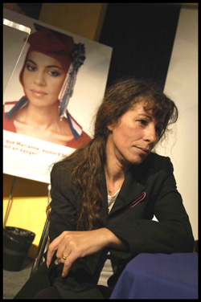

پذيرش > تریبون > گفت و گو > جنبش يک ميليون امضا حرکتی بسيار برانگيزاننده ست و به ما نیز قوت قلب (...)
 فادلا آمرا رهبر جنبش " نه هرزه و نه فرمانبردار": فادلا آمرا رهبر جنبش " نه هرزه و نه فرمانبردار":

 جنبش يک ميليون امضا حرکتی بسيار برانگيزاننده ست و به ما نیز قوت قلب میدهد جنبش يک ميليون امضا حرکتی بسيار برانگيزاننده ست و به ما نیز قوت قلب میدهد
29 اردیبهشت 1386 - شهلا شفیق - نسخه قابل چاپ
در سال 2002 بر پائی جنبش " نه هرزه و نه فرودست " نام فادلا آمرا را در فرانسه شهره کرد. اين کارزار بی سابقه توجه افکار عمومی را به خشونت هائی که دختران و زنان در محل های فقير مهاجر نشين قربانی آن هستند جلب می کند . امروز اين جنبش دامنه فعاليت خود برای آزادی و برابری زنان را به خارج از مرزهای فرانسه گسترش داده است.
فادلا آمرا در گفت و گو با شهلا شفيق ش.ش: تو در جریان جنبش زنان در ایران هستی که برای رفع تبعیض و برابری حقوقی با مردان مبارزه میکنند. آنان از قانونگذاران میخواهند که به تعهدات خود در قبال کنوانسیونها و ابزارهای قانونی ملل متحد که ایران امضاء کرده است عمل کنند و قوانین کشوری را که با تعهدات در تناقضاند تغییر دهند. مايلم بگوئی به چه دليل به صف حاميان اين جنبش پيوستی.
ف: می دانی که جهت گيری جنبش ما درمسير پیشرفت و ارتقاء آگاهی در بستر ارزشهای جهان رواست. دفاع از این ارزشها برای ما فوقالعاده مهم است. ما از هیچ شروع کردیم. از محلههای فقیر به سوی بیرون. هر مبارزهای که در جهت آزادی فرد، و به ویژه آزادی زنان صورت بگیرد، برای ما بسیار اهمیت دارد و از آن حمایت می کنيم. بعلاوه ما نیازمند بهره گرفتن از مبارزات فمینیستهایی هستيم که از کشورهائی چون مراکش، الجزایر، خاورمیانه و ایران میآیند. امروزهمبستگی هر چه بیشتر با مبارزات زنان در این کشورها براي من خيلی مهم است. همچنين مهم است که مبارزات فمینیستی موجود برای آزادی و برابری را در این کشورها انعکاس دهيم.
زنان ایرانی همواره برای من یک نمونهاند. مبارزات فمینیستی هميشه در این کشور وجود داشته است. جنبش يک ميليون امضا حرکتی بسيار برانگيزاننده ست، چرا که به نحو هوشمندانهای مناسبات پدر سالارانه را نشانه گرفته و به تقابل با نظم مسلط پرداخته است. این به ما نیز قوت قلب میدهد. دختری که در این جا در یک محله فقیر نشین زندگی میکند، وقتی زنان ایرانی را میبیند که برای آزادی و برابری به مبارزه برخاستهاند، دلگرم شده و نیروی بیشتری برای مبارزه با مرد سالاری پیدا میکند.
وقتی ما کار خودمان را در محلهها شروع کردیم و با خشونت علیه زنان به مبارزه برخاستیم، تکیهگاه ما به ويژه زنان فمینیست مراکشی و الجزایری و غیره بودند. ما باید ادامه دهیم و این سیلی محکمی خواهد بود به کسانی که آزادی و برابری زنان را غربی یا متعلق به سفید پوستان قلمداد میکنند. و این کار، خاصه بر عهده زنانیست که نه در فرانسه اند و نه در اروپا یا غرب، بلکه در کشورهای عرب و یا مسلمان برای آزادی و برابری زنان به مبارزه برخاستهاند. من نمیدانم اینهایی که بیانیه میدهند و جنبش ما را متهم به چه و چه میکنند، این زنان را به چه چیزی متهم خواهند کرد؟ بهترین کار آن است که به ایشان بگوییم: «به زنان ایرانی، مراکشی، الجزایری و حتا به زنان سعودی نگاه کنید که برای آزادی و برابری به حرکت درآمدهاند». این بهترین راه برای پاسخ به این عیبجویان است.
ش.ش: فادلای عزیز تو خود را مسلمان می دانی و در عین حال با فمینیسم اسلامی مخالفی. مايلم در اين باره بگوئی.
ف: برای برخی مسلمان و در عین حال فمینیست بودن متناقض است، اما برای من چنین نیست. به این دلیل ساده که مبارزات فمینیستی، ضرورتا مبارزهایست برای دموکراسی. نکته دوم این که آزادی وجدان امر بسیار مهمی است که رهایی زنان را، علیرغم خواستگاه اجتماعی و تعلقاتی که دارند، امکانپذیر میکند. آزادی وجدان، وجدانی که در ورطهی تاریک اندیشی نمیافتد از نظر من اهمیت اساسی دارد. من مسلمانم اما خشکاندیش نیستم، بنابراین، مبارزات زنان مطلقا تناقضی با باورهای مذهبی من ندارد. مبارزات فمینیستی برای من به معنی اختیار بدن خود را داشتن، بهرهمندی از آزادی بیشتر و رسیدن به برابری زنان با مردان است. اولویت برای من این است که زنان صاحب اختیار بدن خود باشند ، بدون هیچ اجباری، بدون هیچ فشاری از هر سو که باشد.
به نظر من فمینیسم اسلامی، مفهومی متناقض است، چرا که به محض قبول حق زنان در اختيار بر جسم و جان خود، ارجاع آن به قانون مقدس معنائی ندارد. برای همین است که من با فمینیسم اسلامی مخالفم و میخواهم بگویم «من بیخدا نیستم، مسلمانم، اما مدافع ارزشهای جهان روا هستم و خواهان برابری حقوق زنان با مردان.»
ش.ش: خوب است قدری در اين باره توضيح دهی که در کشوری مثل فرانسه جنبشی چون «نه هرزه و نه فرمانبردار» چه ضرورتی دارد؟
ف: اگر ارزشهای جمهوریت چون آزادی و برابری و لائیسیته در محلههایئ که ما از آن برخاستيم به عمل در می آمد نیازی به جنبشی چون «نه هرزه و نه فرمانبردار» نبود . اما ما در وضعیتی هستیم که ارزشهای جمهوری در دروازههای محلههای فقیرنشین متوقف میشود. میان محلههایی که مشکل خاصی ندارند، محلههای مرفه نشین و محلههایی که از نظر اجتماعی دارای مشکلاتی هستند، خط فاصل هائی وجود دارد. نهادهایی که در محلههای ما هستند، محلههایی که من گتو مینامم، حامل ارزشهای جمهوری نیستند. در این محلههای گتو مانند، افراطی گری مذهبی حضور دارد. این محلهها حتا پس رفتهاند. در سالهای دهه 70 زنان برای این که صاحب بدن خود باشند مبارزه کردند و آن را به دست آوردند، در این محلهها ما آنقدر پس رفتهایم که تازه در 2002 خواهان رسیدن به چنین چیزی میشویم . اما مسئولیت پیدایش این مجموعههای بسته، از جمله با مردان و زنان سیاسی متعلق به احزاب راست و يا چپی است که در اين محله ها کار را در دست دارند . اینان برای حل مناقشات موجود در این محلهها متوسل به افرادی میشوند که به خودشان لقب امام دادهاند و یا قلچماقهای محل را به عنوان برادر بزرگ برای خواباندن شلوغیها به کار میگیرند که در هر دو صورت به استقرار پدرسالاری در این محله ها میانجامد. اگر چه این مناطق به یمن فعالیت پیگیر نهادهایی همچون جنبش ما در حال تحولاند، اما ما شاهد پسرفتهائی نیز هستیم. برای آگاه گری در این زمینه کار بسیار است . طی سالهای گذشته، کاری که در این مناطق شده و یا اجازه داده اند که بشود، همه در جهت خراب کردن جمهوری و ارزشهای جمهوریت بوده است. امروز، بازگرداندن واحیای این ارزشها در قلب این محلهها، به کار و فعالیت انجمنها و نهادهای مدنی، و از جمله جنبش ما بستگی دارد. برای این کار باید یک نیروی ضربتی فراهم آورد و درمناسبات توازن قوا، در عرصه سیاسی به حساب آمد و دستیابی به برابری جنسی را در این محلهها میسر نمود.
ش.ش: تو در صحبتهایت از مشکلات محلههای فقیرنشین یاد کردی، در حالی که برخی از عیبجویان جنبش شما، تشکیلات تان را به همکاری با بورژوازی متهم میکنند، نظرت چیست؟ این را هم بگویم که اخیرا بیانیهای به امضای عده ای منتشر شده که در آن از فمینیسم سفید، فمینیسم سیاه و غیره سخن رفته است.... در مورد این انتقادات چه می گویی؟
ف: بیتعارف بگویم، من ترجیح میدهم با آن بورژوازی که از برابری و آزادی برای همگان سخن می گوید متحد شوم تا با هواداران نسبیت فرهنگی که زمینه ساز سرکوب زنان هستند. من اصلم خارجیست و بدیهی است که به فرهنگ خانواده خود علاقمندم و مشکل هویت ندارم. از کودکی می دانم که ما سنتهایی پدر سالار داریم. منظورم خاصه مذهب نیست، میگویم سنت. میدانم که این سنتها، متأسفانه زن را سرکوب میکند. معتقدم که باید علیه این سرکوب جنگید. من اعتقادم بر این ست که نباید آزادی و برابری را بر پایه رنگ پوست و یا جغرافیا تعریف کرد. کسانی که میگویند جنبش ما با بورژوازی و سفیدها متحدشده، منظورشان این است که آزادی و برابری ارزشهای غربی هستند. این واقعا شرمآور است. این بدان معناست که هرگز فکر نکردهاند که در کشورهای عربی، یا به طور کلی کشورهای مسلمان میتواند نیروهای دموکراتیکی وجود داشته باشد. به نظر من میان بن لادن و بوش، راه سومی هم موجود است. بدون این که بخواهم این دو را در یک ردیف قرار بدهم، معتقدم که راه سوم، راه پیشرفت و ارتقا آگاهیست و من خودم را در این راه میبینم. کسانی که به نسبیت فرهنگی باور دارند و هرچه دلشان میخواهد علیه جنبش ما میگویند از دو حال خارج نیست، یا تمایلات راسیستی دارند و یا نگاهی نواستعماری که هنوز با آن تعیین تکلیف نکرده اند. من معتقدم میتوان از افقهای گوناگونی به مبارزه برای آزادی و برابری پیوست.
ش.ش: راستی تو چگونه با فمینیسم آشنا شدی؟
ف: من بامبارزه فمینیستی دیر آشنا شدم. اما حالا می دانم که زندگی ام از همان ابتدا با فمینیسم گره خورده ، از همان زمانی که در برابر برادرانم خواهان آزادی عمل شدم. من در خانوادهای بودم که آموزش پسر با دختر به کلی متفاوت است. اما آشناییام با فمینیسم به عنوان مطالبات سیاسی، بعدها بود. من با مبارزه علیه راسیسم شروع کردم و سپس به مبارزه فمینیستی رسیدم.
ش.ش: اطرافیان و نزديکان تو چه عکس العملی داشتند ؟
ف. پدر من کاملا با ماست. او هرگز نام ما را به زبان نمیآورد، اما با محتوای کار صد در صد موافق است. با این حال یک نگرانی کوچک دارد: در مورد دخترانش صد در صد حمایت میکند، اما در مورد همسرش قدری متفاوت است، هنوز نتوانسته از این مرحله بگذرد. همسرش برای او زن «خودش» است و در این مورد همچنان دست بالا را دارد، گرچه مادرم هم شورشیست و بیش از گذشته آزادی دارد، اما به هر حال تا آخر خط نمیرود. من شاهد این دیالکتیک رابطه میان آن دو هستم که به من امکان میدهد که مشکلات رابطه زن و مرد را در جامعهی پدرسالار قبیلهای بهتر درک کنم. من شاهد تحول پدر و مادرم هستم و میبینم چیزهایی هست که هنوز برای پدرم پذیرفتنی نیست. آزادی مادرم هنوز با اجازه پدر متحقق میشود، واقعا غیرقابل تصور است!
پدرم میگوید (این را در کتابم هم نوشته ام)، «فادلا به ده تا مرد میارزد!» و من با خودم میگویم زمانی ما در این مبارزه از نظر سیاسی و نظری پیروزیم که او بگوید: «فادلا، به ده تا زن میارزد!» اما ما هنوز به این جا نرسیدهایم!
میدانی؟ مشکل بزرگ من نه با پدران یا مادران بلکه با جوانهای دور بر ما ست . البته نه همه، برخی. و این مختص محلههای فقیرنشین نیست، وقتی به محلههای مرفه هم میروم، میبینم همین طور است. در آن جا هم از بعضی پسرها میشنوی که میگویند: ما دلمان میخواهد که زن در خانه بماند و به بچهها برسد، ما دوست نداریم که زن دستور بدهد! این نگاه مرد سالاری را در محلههای مرفه هم مشاهده میکنی. در احزاب سیاسی هم همین طور است. امروز یک زن میخواهد، پس از این همه تحولات، رئیس جمهور شود، ببین چه خبر است! اما نباید پنهان داشت که این مشکلات در محلههای فقیرنشین به مراتب سختتر است و زنان وضعیت آسیبپذیرتری دارند. و تبعیض علیه زنان خارجی، به مراتب بیشتر و دو یا حتا سه برابر است.
ش.ش: نام «نه هرزه و نه فرمانبردار» که به پسزدنها و بحثهای فراوانی انجامید، بسیار جالب است. فکر انتخاب این نام از کجا آمد؟
ف: وقتی که که ما کارمان را شروع کردیم، به علت نامی که برگزیده بودیم، با انتقادهای زیادی مواجه شدیم. خوشبختانه ما در دموکراسی زندگی میکنیم و به یمن کار آموزشی انجام یافته برای توضيح چرایی این ا نتخاب ( که فریاد خشم است) ، نام ما حالا دیگر در اذهان مردم جا افتاده. امروز انتقادها در این باره بسیارکم است . من شخصا مایل نیستم به یک نهاد بدل شوم بلکه میخواهم ظرفیت و توانایی شورشی خودم را حفظ کنم!
این نامگذاری به نظرم خیلی بدیهی است. وقتی در محلههایی زندگی میکنیم که، متأسفانه بسیاری از پسران میگویند «زنان همه هرزهاند، جز مادر من!» خیلی واضح بود که بگوییم «نه، نه!» بنابر این «نه هرزه». و اما مفهوم «نه فرمانبردار» در پاسخ به کسانی بود که با بیانات پرتکبر میگفتند که اگر زنان در محلهها مطیع و فرمانبردارند به خاطر این است که علیه این وضعیت برنمیخیزند. این به نظر من ندیدن فعالیت زنانی بود که در انجمنها و نهادهای محله جمع شده بودند، نهادهای که میتوان گفت آخرین سنگر در مقابل طرد و انزواست. در واقع، مفهوم «نه فرمانبردار» قدردانی و ستایشی بود از کار مداوم و مورچهوار دختران جوان و زنان در این نهادها، کاری که قدر آن ناشناخته مانده است. نام «نه فرمانبردار»، به نوعی یک سیلی بود بر بناگوش برخی از روشنفکران ما که بدون آن که پایشان به محلههای ما رسیده باشد، به خودشان اجازه میدهند ما را از خلال اوراق کتاب، تحلیل کنند. این فریاد خشم ما بود در مقابل سوزاندن زنان در کشور ما، و به ویژه در محلههای ما. این را به هیچوجه نباید پذیرفت. اگرچه بسیاری در آغاز از این نام شوکه شدند، اما امروز بسیارند کسانی که خود را در کنار ما میبینند.
ارسال به
بالاترین
،
توییتر
،
فریندفید
،
فیسبوک
در همين بخش :
 دهمین دورۀ مراسم تندیس صدیقه دولت آبادی ۱۳۹۲ دهمین دورۀ مراسم تندیس صدیقه دولت آبادی ۱۳۹۲
کارت پستالهایی به بهانهی هشت مارس و به یاد همهی مبارزین راه برابری
بیانیه بیش از 350 تن از مدافعان حقوق زنان به مناسبت روز جهانی زن؛ زنان هر روز فرودستتر میشوند
لباسی که برای تن ما دوخته اند! /اعظم بهرامی
چالشها و چشمانداز فعالیت مدنی زنان
ديگر بخش ها :
طرح یک میلیون امضا
|
مقالات
|
سایت نوشته ها
|
اخبار
|
گزارش كمپين
|
گفت و گو
|
علیه سکوت
|
كوچه به كوچه
|
نامه های شما
|
گزارش ویژه
|
گفتگو با اعضا
|
ویژه سالگرد کمپین
|
تصویر برابری
|
دل آرام علی
|
تریبون
|
مقالات
|
تاریخ شفاهی
|
خارج از چارچوب
|
کتابخانه
|
درباره کمپین
|
کمپین در شهرها
|
کمپین در بند
|
صدای تغییر
|
ویژه 22 خرداد
|
لایحه حمایت از خانواده
|
گالری
|
عشا مومنی
|
امیر یعقوبعلی
|
خدیجه مقدم
|
راحله عسگری زاده و نسیم خسروی
|
پروین اردلان،جلوه جواهری، مریم حسین خواه، ناهید کشاورز
|
زینب پیغمبرزاده
|
سعیده امین، سارا ایمانیان، محبوبه حسین زاده، ناهید کشاورز و همایون نامی
|
احترام شادفر
|
نسیم سرابندی زاده،فاطمه دهدشتی
|
وبلاگ مهمان
|
پرونده خرم آباد
|
دستگیری ها
|
مریم مالک
|
پرستو اللهیاری
|
مهرنوش اعتمادی
|
سمیه رشیدی
|
Other Languages
|
همراهان
|
«فراخوان کمپین ده روز با بهاره هدایت»
| English
|